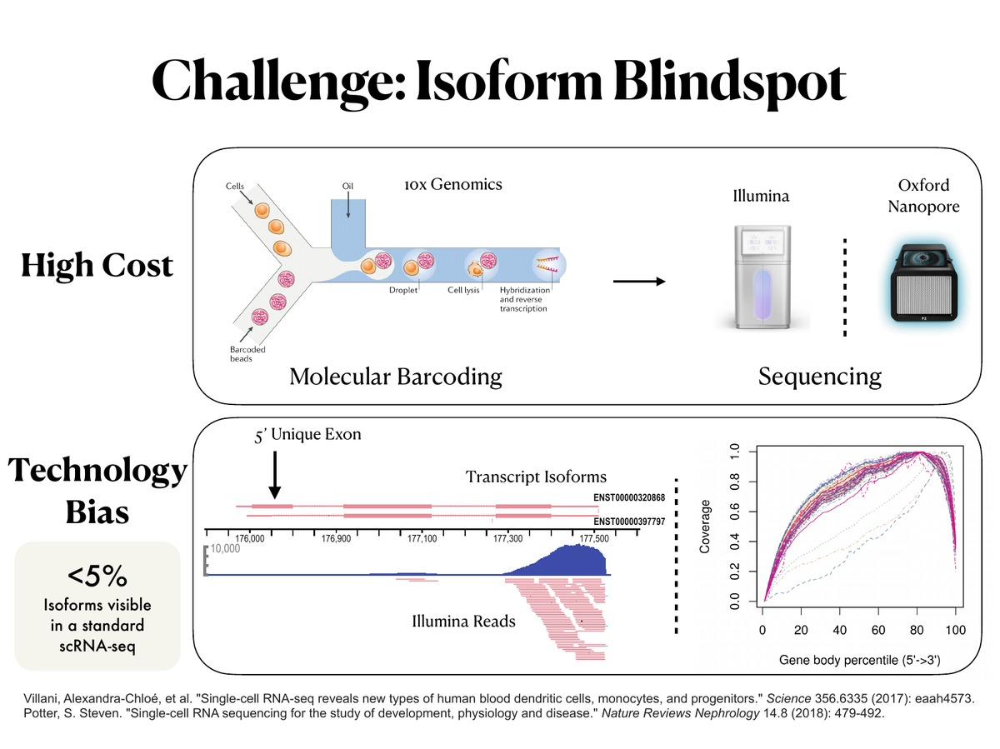
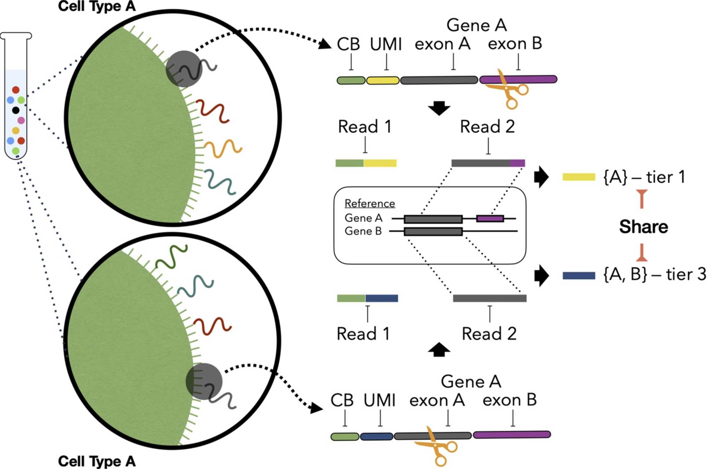

Isoform switching in cancer and immune disease
How does isoform switching drive resistance to targeted therapy in NRAS-mutant melanoma? How does EBV hijack the splicing machinery to dysregulate the immune response? Standard single-cell RNA-seq cannot answer these questions because it captures only the three-prime end of transcripts, collapsing more than two hundred thousand distinct transcript isoforms into roughly twenty thousand gene-level counts. Fewer than five percent of isoform diversity is visible in a standard single-cell experiment — and that invisible fraction is precisely where splicing-driven disease mechanisms live.
We built BenchDrop-seq to close this gap: a microfluidics-free platform that combines PIP-seq single-cell capture with Oxford Nanopore long-read sequencing, all on a standard lab bench with no dedicated instrument. Our Bagpiper pipeline handles the unique computational challenges of long-read single-cell data — spacer-anchored barcode recovery, multi-mapping resolution via expectation maximization, and isoform-level count matrices. We apply BenchDrop-seq to ask where isoform switching drives biology that gene-level analysis cannot see: resistance to pan-RAS inhibition in NRAS-mutant melanoma with the Villanueva Lab, and EBV-driven immune dysregulation with the Lieberman Lab, both at Wistar.

Chromatin dynamics and gene-regulatory networks
Why do melanoma cells escape targeted therapy without acquiring new mutations? Why do some EBV-infected B cells differentiate into effective antigen presenters while others enter a latent, dysregulated state? Much of the answer lives in chromatin — the cell’s working memory — where regulatory elements switch on and off to reshape transcriptional output without changing the underlying genome.
We use single-cell CUT&Tag and related assays to track how regulatory elements switch on and off across differentiation, and we build chromatin-aware gene-regulatory network models that explicitly link those elements to their target genes. The questions we love most are about dynamics: which regulators move first, which downstream programs follow, and where the system becomes brittle — with applications in melanoma progression and immune cell differentiation.

Multimodal single-cell genomics
Disease is rarely one-dimensional. A melanoma cell escaping targeted therapy changes its transcriptome, its chromatin state, and its surface-marker profile in concert; so does a T cell exhausted by chronic viral infection. We build joint models and integration frameworks that let those modalities reinforce each other, so a single cell can be described by a single, coherent state rather than a stack of disagreeing tables.
This work powers community tools including Seurat v5, Signac, and scCUT&Tag-pro.

Scalable, fast, and reproducible quantification
Atlas-scale experiments are now the norm rather than the exception, and tumor heterogeneity and treatment-response studies only work at that scale. We invest heavily in algorithmic engineering — succinct indices, lightweight mapping, careful UMI deduplication — to keep RNA-seq and single-cell RNA-seq quantification fast, memory-frugal, and reproducible across machines, enabling atlas-scale analysis of tumor heterogeneity and treatment response.
This is the lineage that includes RapMap, salmon, the alignment-vs-mapping study, and the alevin/alevin-fry single-cell quantifiers. We care about clean abstractions almost as much as benchmarks.
Uncertainty-aware models for noisy biology
Single-cell data is sparse, multi-mapping, and full of reads that quietly disagree about which gene they came from. Most pipelines either discard the ambiguity or hide it behind a confident-looking number. We instead build Bayesian and probabilistic models that propagate that uncertainty all the way through quantification, differential analysis, and downstream inference — so that clinical decisions built on single-cell data reflect what we genuinely do and do not know.
The result is methods like alevin and alevin-fry, plus inferential-replicate workflows that let downstream analyses honour what we genuinely do not know.
